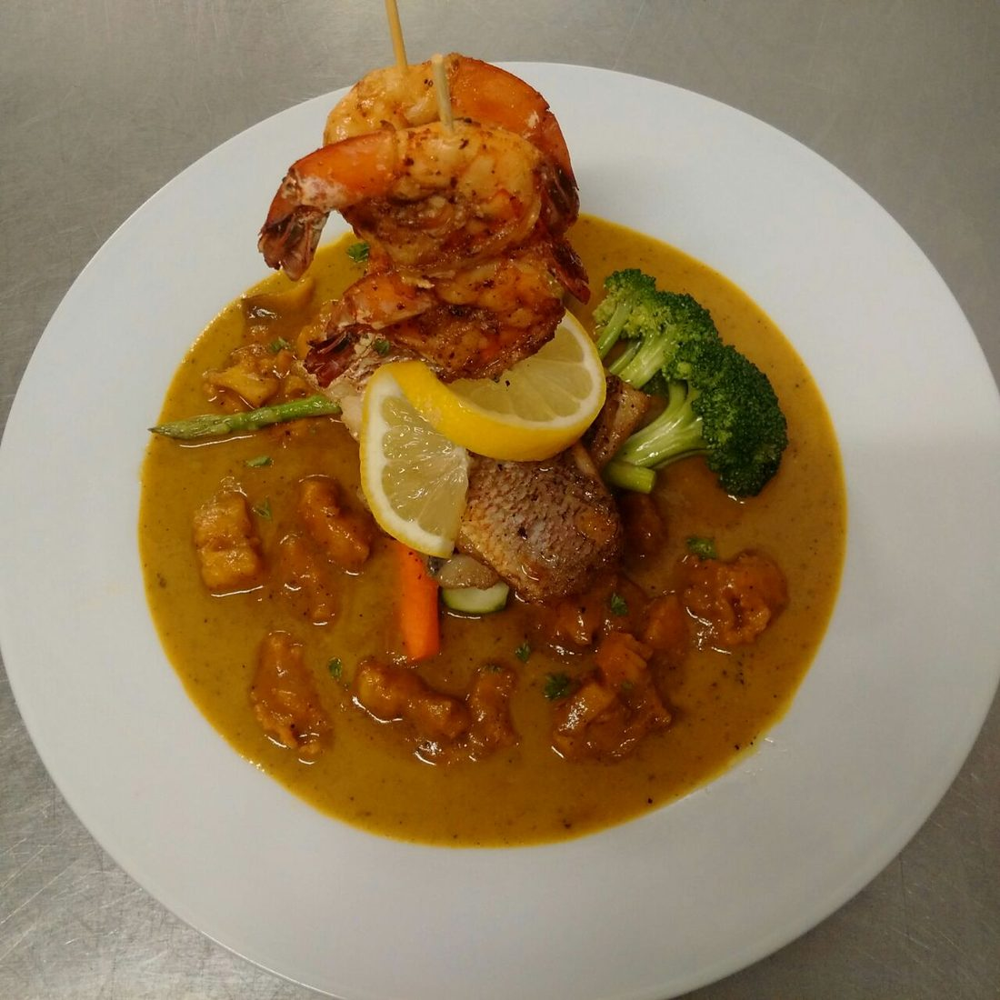
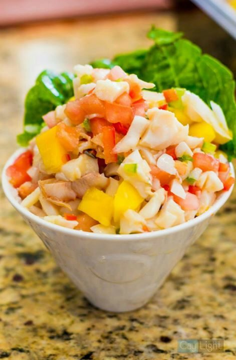
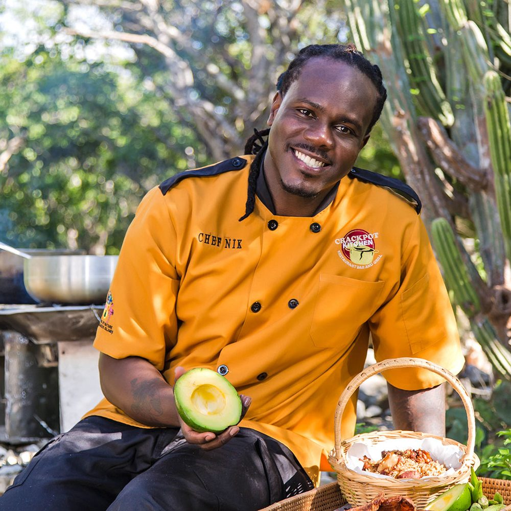
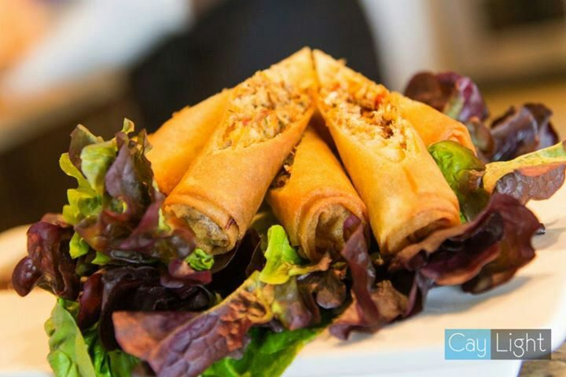
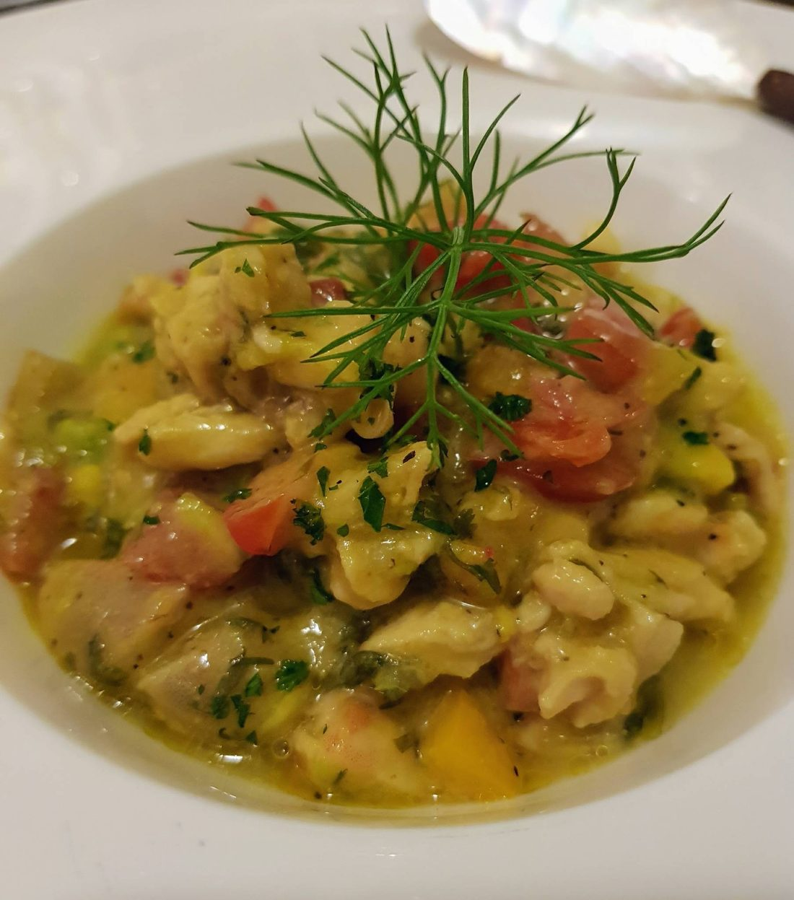
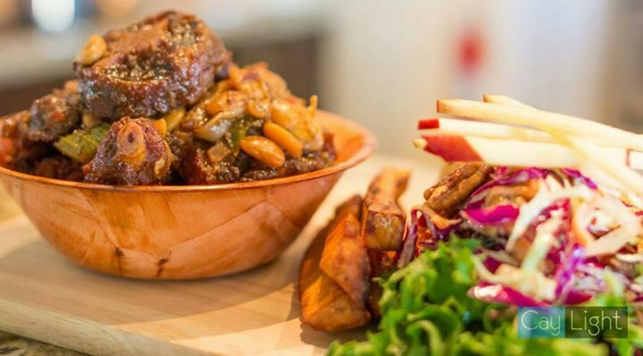

Home of thebest pot.
Chef Nik's Turks Island and Caribbean cooking, from his kitchen on Leeward Highway, Grace Bay.
Give it a knock. Chef Nik drums his spoon on the rice pot while it simmers.
“Soon enough you're going to crack every pot in this kitchen.” His line cook said it. Chef Nik laughed, and named the business after it.
Fish  
Learned it atSmokey's stove.
The pot that named it
Chef Nik learned island cooking from his father, Aulden 'Smokey' Smith, one of the country's top local cooks. Making okra and rice with lima beans, conch, pigtails and salt beef, he would cover the pot, then dance and drum on it with his spoon. His line cook warned him he'd crack every pot in the kitchen. Nobody cracks cast iron with a spoon, so he kept the name.
A first for the islands
He went on to produce and star in the first cooking show on TV in Turks and Caicos, the Crackpot Kitchen Cooking Show. The show gave birth to the catering, the restaurant and the Crackpot tropical sauces. Today he's a Culinary Ambassador of the Turks and Caicos Islands.
“There are absolutely no shortcuts to good old-fashioned traditional cooking. Just add garnish!”Book Chef Nik

The week
Grace Bay time- MonClosed
- TueLunch 11:30–3 · Dinner 5–11

Lunch specials, Tue to Sat- WedLunch 11:30–3 · Dinner 5–11
- ThuLunch 11:30–3 · Dinner 5–11
- FriLunch 11:30–3 · Dinner 5–11
- 2-4-1Cracky Hour, Fridays 5–7
- Live band, Saturday nights
- SatBrunch 9–2 · Dinner 5–11
- 9amSmokey's Saturday brunch
- SunDinner 5–11

Dinner from 5- 10+Lunches delivered free
- 150+Guests for your event

From the pot
Free lunch delivery on orders of 10 or more around Leeward Highway and Grace Bay. Cracky Hour: two-for-one beer, select wine and well drinks.
Party rentals too: tents, tables, chairs, grills, chafing pans, sternos, glassware, china, cutlery, cookware and table linen.